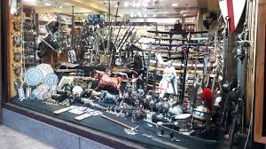
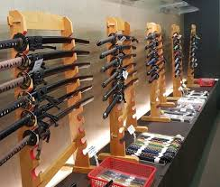
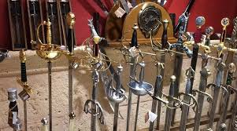
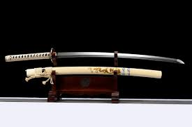

¿Sin ganas de explorar? ¡Prueba nuestras siempre confiables!
Aquí encontrarás información sobre las tiendas más populares entre nuestros miembros. Cada tienda tiene su nivel de dificultad y características únicas. ¡Elige sabiamente tu próximo objetivo!
| Foto | Nombre | Dificultad | Información | Ubicación |
|---|---|---|---|---|
|  | Espadas Medievales El Castillo | Fácil | Tienda pequeña en el centro histórico de Toledo. Personal reducido y sin sistema de seguridad moderno. Ideal para principiantes. | Ver en mapa |
|  | Kabuto's Den | Media | Especializada en espadas japonesas. Tiene cámaras de seguridad pero el personal no está muy alerta. Requiere algo de experiencia: suele haber guardias civiles rondando por la calle. | Ver en mapa |
| Fencing Masters | Difícil | Tienda de alta gama con seguridad avanzada. Personal entrenado y sistema de alarmas. Solo para expertos con nervios de acero. El de la caja está fuerte. | Ver en mapa | |
|  | Espadas y Más | Fácil | Tienda familiar con horarios irregulares. Buena selección de espadas decorativas. Perfecta para practicar técnicas básicas de sigilo. | Ver en mapa |
|  | La Forja del Guerrero | Media | Tienda mediana con buena variedad. Tiene guardia de seguridad ocasional. Requiere planificación previa y conocimiento del horario del guardia. Nota aparte, la dueña sabe mucho de historia. PD: no hay forja. | Ver en mapa |
| El Arsenal Real | Difícil | La tienda más exclusiva y protegida de Barcelona. Sistema de seguridad de última generación, personal militar retirado y perrete guardián muy mono. Solo para los más valientes y experimentados. ¡Estos sí que tienen forja! | Ver en mapa |